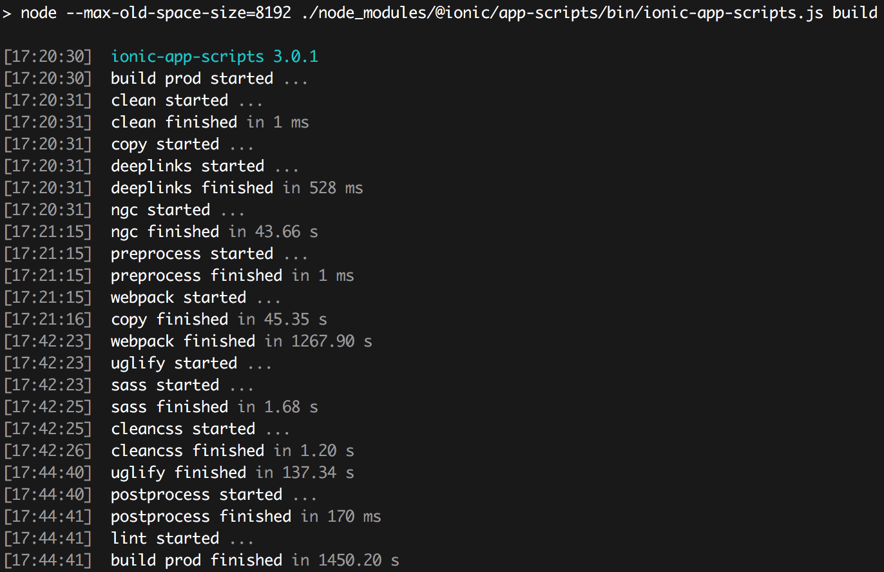
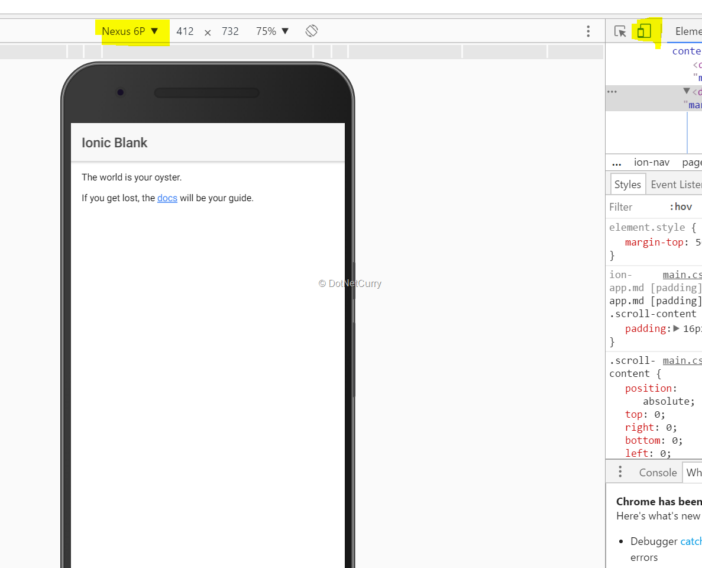

<body>
  <br>
  <br>


 <h1>Create your first Ionic app</h1>

<ul>
<li><h3>
    To run your app, cd into the directory that was created and then run the ionic serve command to test your app right in the browser:</h3>
<p class="inst">ionic start helloWorld blank</p>
</li>



<li><h3>This link below shows you how to run you app on the browser</h3>
<p class = "inst">cd helloWorld $ ionic serve</p>
</li>

</ul>


</body>